Mintzy Plugin is a desktop trading application that automates equity trading through your broker account. You sign in with an API key from your Mintzy account, connect one of the supported brokers, and the app runs your chosen trading strategies for you — showing live profit and loss (P&L), a chart of the day's performance, and a full log of every trade the bot places.
What the app does
Automated trading. You set the trading parameters (which stocks, how much capital, the stop-loss, the candle interval, and the strategy), and Mintzy executes the strategy through your broker while you watch.
Live dashboard. See your broker cash, equity, and this month's P&L at a glance.
Session history. Every session you run is recorded. You can reopen any past session to read its trade log and P&L, and download the data as a CSV file.
Performance statistics. The app computes figures like win rate, best and worst days, drawdown, and month-by-month returns from your trading history.
Saved strategies. Save a trading setup once and reuse it for future sessions — or start it with one click.
Who should use it
Anyone with a Mintzy account and a supported Indian broker account who wants hands-free, rules-based trading. This guide assumes you already have your Mintzy API key and a broker account (Angel One, TradeX, or Bear Street).
What this guide covers
This guide explains every screen and every major action in the app: signing in, reading the dashboard, navigating, running a trading session, saving strategies, changing settings, and logging out. Each section uses real screenshots from the application so you can compare what you see on your screen with this guide. Features that could not be verified with a live broker connection are clearly marked.
2. Getting Started
2.1 What you need
The Mintzy Plugin desktop app, installed on Windows.
A Mintzy API key. You get this from your Mintzy account at mintzy.in. The key decides which broker your sessions will use.
An internet connection. The app must reach the Mintzy servers and your broker.
Your broker credentials — the API key, client code, and password/PIN (or the equivalent for your broker) — to connect for trading sessions.
WARNING
Your API key and broker credentials are sensitive. Do not share them. The API key is shown as dots while you type it, and logging out removes the saved session from this computer.
2.2 First launch
When you open the app for the first time, you see the sign-in screen. This is the only screen you need before you can use the app.
Figure 1 — The sign-in screen shown when you first open the app
2.3 Sign in
Find the field labelled API Key in the middle of the window.
Click inside the field and paste your Mintzy API key. The characters are hidden as dots for security.
Click the eye icon on the right of the field if you want to see what you typed. Click it again to hide the key.
Click the Continue button below the field.
The button briefly shows Verifying… while the app checks your key.
When your key is accepted, the app opens your Dashboard.
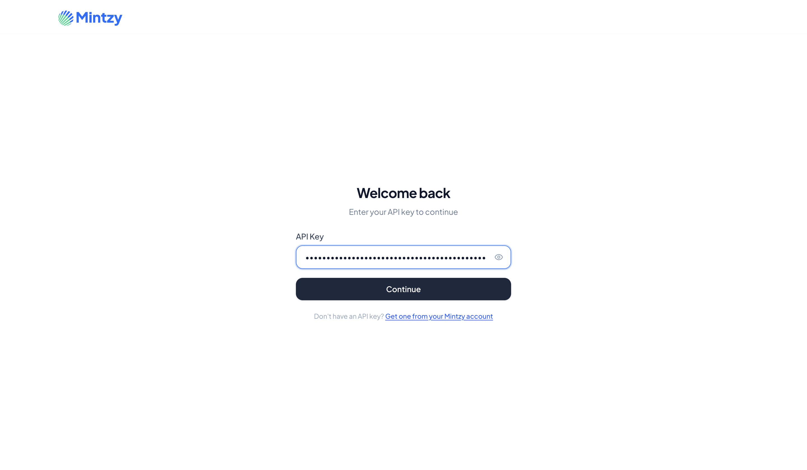
Figure 2 — Signing in with your API key entered (the key itself is hidden)
TIP
If you don't have an API key, click the link Get one from your Mintzy account under the sign-in button to open the Mintzy website.
2.4 If your key is not accepted
If the key is wrong or belongs to a different account, a red message appears in a box under the field. With the example account used in this guide the message reads:
"Invalid Angel One API key. Check the key in the Angel SmartAPI portal and try again."
(The wording may be different for TradeX or Bear Street keys.) Check that you copied the whole key, then try again.
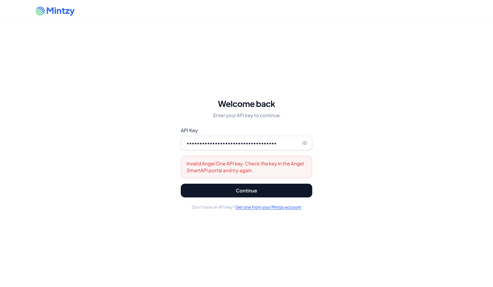
Figure 3 — The error shown when an API key is not accepted
NOTE
If the app cannot reach Mintzy's servers (for example you are offline), the message instead says the app could not reach Mintzy. Check your internet connection and try again.
3. Understanding the Interface
After you sign in, you land on the Dashboard. The whole app shares the same shell: a sidebar on the left, a title bar at the top, and the main content area in the middle.
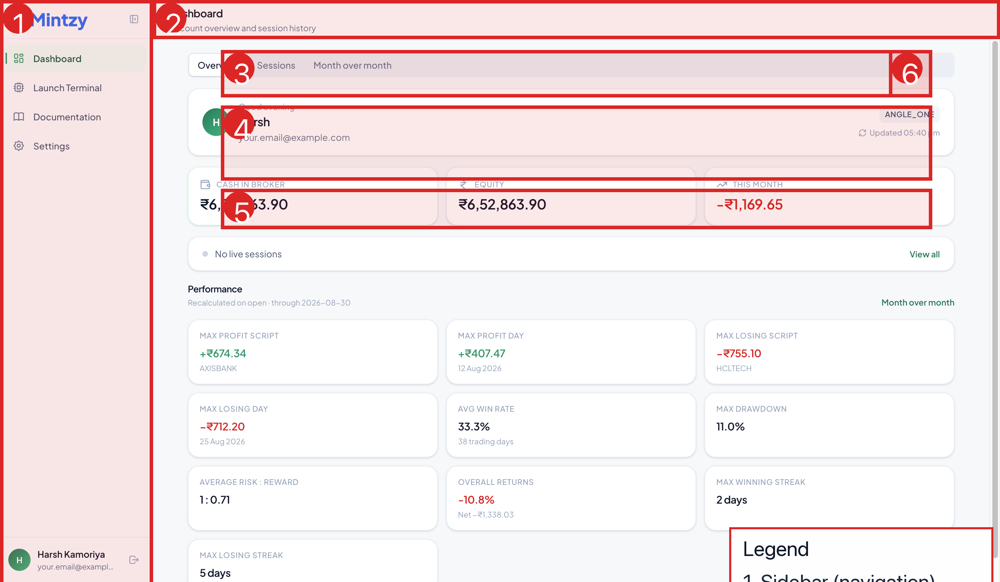
Figure 4 — The Dashboard with the main interface areas numbered
Sidebar (navigation). The vertical panel on the far left. It contains the Mintzy logo at the top, the main navigation (Dashboard, Launch Terminal, Documentation, Settings), and your name, email, and a Log out button at the bottom.
Page title bar. The strip at the top of the content area. It always shows the name of the page you are on and a short description.
Your account card. Shows a greeting ("Good morning / afternoon / evening"), your first name, your email, and your broker (for example ANGLE_ONE).
Account metrics. Three summary cards: Cash in broker, Equity, and This month (the month's profit or loss).
Live session status. A row that tells you how many sessions are live or ready, with a View all link to the full session list.
Refresh. The Updated … text in the account card is also a button — click it to refresh the numbers right away. The app also refreshes automatically.
Collapsing the sidebar
The sidebar can be collapsed to a narrow strip of icons to give the content more room. Click the collapse icon (two arrows pointing left) at the top of the sidebar to collapse it, and the expand icon (two arrows pointing right) to bring the labels back. When it is collapsed, hovering over the strip temporarily shows the labels.
4. Navigation Guide
All navigation happens from the sidebar on the left. There are four destinations:
Sidebar item
What it opens
Dashboard
Your account overview, session list, and performance figures.
Launch Terminal
The trading workspace: sessions sidebar, broker connection, and live charts.
Documentation
A short in-app guide to the whole application.
Settings
Desktop preferences (startup, tray, notifications) and app updates.
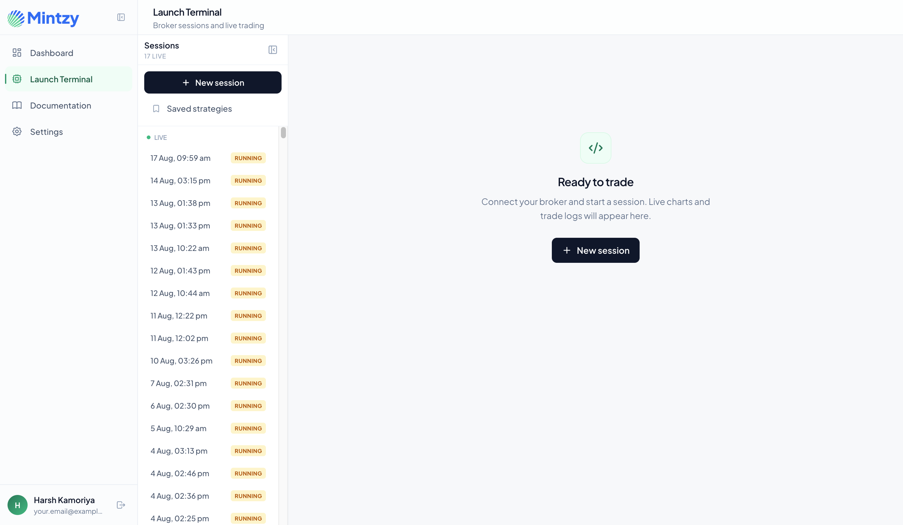
Figure 5 — The sidebar (left) and the Launch Terminal page (right). Note the green "17 LIVE" badge showing how many sessions are active.
How to move around
Click any item in the sidebar once. The page opens in the main content area.
Click Dashboard at any time to return to the account overview.
The currently open page is highlighted in green in the sidebar, with a green indicator bar on its left.
How to log out
Look at the bottom of the sidebar. You will see your avatar, your name, and your email.
Click the log out icon (the arrow-out-of-door symbol) on the right of your name.
The app returns to the sign-in screen. Your session is removed from this computer.
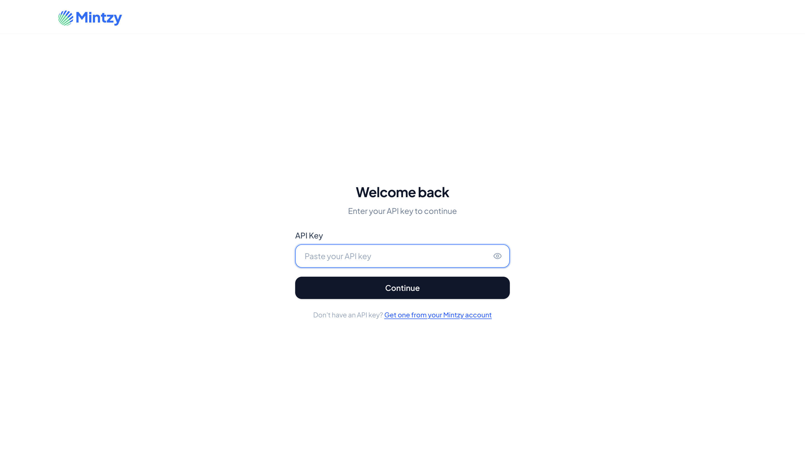
Figure 6 — After logging out you are returned to the sign-in screen
NOTE
If a trading session is live, a green Live badge appears on the Launch Terminal item in the sidebar so you always know trading is running, even from other pages.
5. Feature-by-Feature Guide
5.1 Dashboard — Overview
What it does: The Overview tab is the first thing you see after signing in. It summarises your account and recent performance.
When to use it: Any time you want a quick answer to "how is my trading doing?"
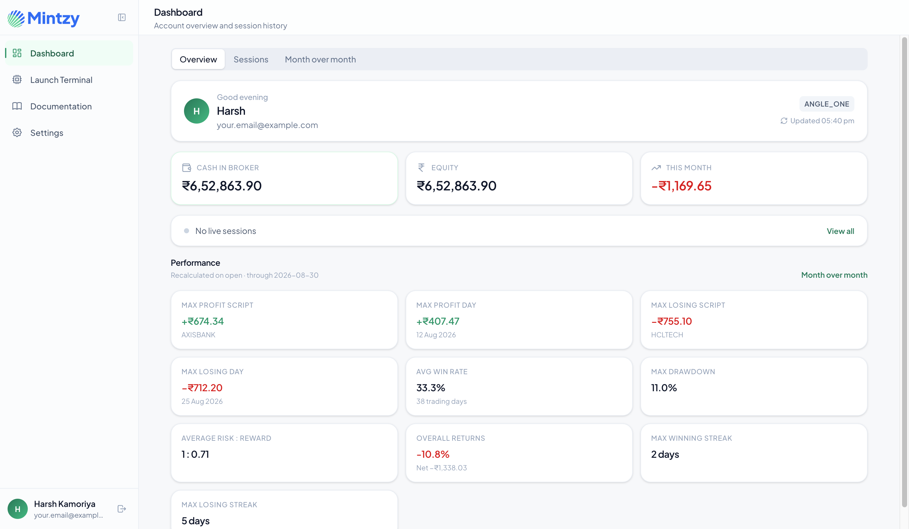
Figure 7 — Dashboard Overview: greeting card, three metrics, and live session status
What each part means
Cash in broker — the cash available in your broker account.
Equity — your total account value including open positions.
This month — the net profit (green) or loss (red) so far this month.
Live session status — for example "1 live trading session" or "No live sessions".
Performance (below, scroll down) — statistics computed from your session trades: best and worst scripts and days, average win rate, max drawdown, average risk:reward, overall returns, and winning/losing streaks.
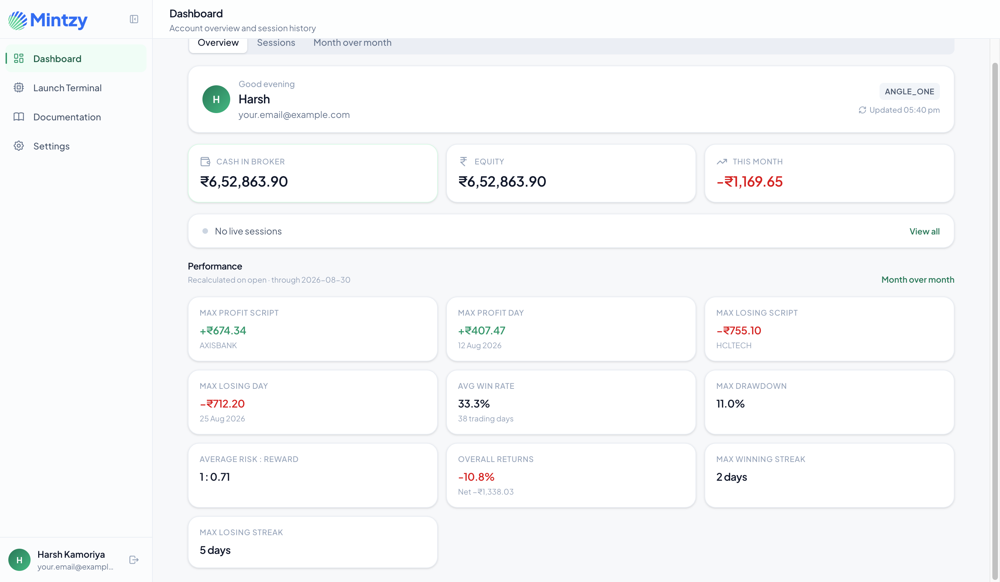
Figure 8 — The Performance section, computed from your session trades
5.2 Dashboard — Sessions
What it does: The Sessions tab lists every trading session on your account, newest first. Sessions are shown 10 per page.
When to use it: To find a past session, check a status, or download session data.
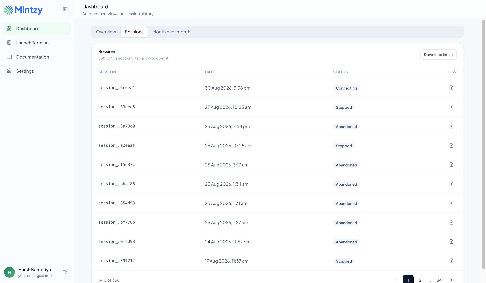
Figure 9 — The Sessions tab, listing every session with its status and a CSV download button
Click the Sessions tab at the top of the Dashboard.
Each row shows a short session ID, the date, the status (Trading, Ready, Stopped, Completed, Abandoned, and so on), and a download button.
Click a row to open that session in Launch Terminal and read its logs and P&L.
Click the download icon in a row to download that session's tradebook or logs as a CSV file.
Use the page controls at the bottom (previous, next, and page numbers) to move through many sessions.
TIP
The Download latest button at the top of the list downloads the most recent session's data in one click.
5.3 Dashboard — Month over month
What it does: Shows your net profit or loss for each of the last 12 months as tiles.
When to use it: To see your progress over time at a glance.
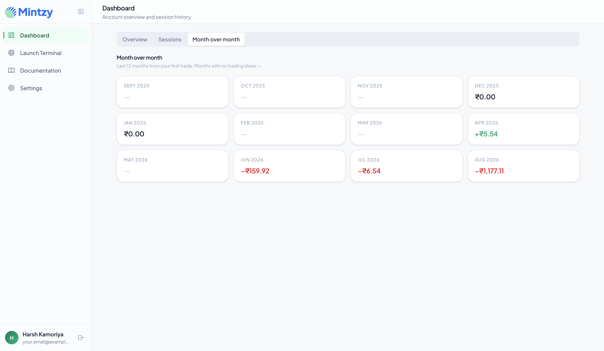
Figure 10 — Month over month returns. Months with no trading show a dash.
Click the Month over month tab (or the link in the Performance section) to open it. Green numbers are profitable months; red numbers are losing months; a dash means no trading happened that month.
5.4 Launch Terminal
What it does: Launch Terminal is the trading workspace. The left panel lists your sessions; the main area is where you connect a broker, set up a session, and watch it trade.
When to use it: To start a new trading session, resume a connected one, or review an old session.
Figure 11 — Launch Terminal with the sessions panel open. "Ready to trade" is shown when no session is selected.
The sessions panel
New session — starts the broker connection flow.
Saved strategies — opens your saved trading setups.
Live — sessions that are trading or simulating right now, with a green "Live" or amber "Sim" label.
History — all finished sessions. Click one to view it read-only; hover and click the trash icon to delete it.
The panel can be collapsed with the panel icon at its top.
WARNING
A session that is Live is trading with real (or simulated) money right now. Deleting it, or stopping it from the live dashboard, stops that trading. Only delete sessions you no longer need.
5.5 Connect Broker
What it does: Before a session can trade, the app connects to your broker with your broker credentials. The fields change depending on your broker:
Angel One — API Key, Client Code, Password / PIN.
TradeX — Access Key / App Key, Client ID / User ID, Access Secret / Secret Key.
Bear Street — API Key, User ID, Password, and Registered Mobile Number (one-step login, no separate code screen).
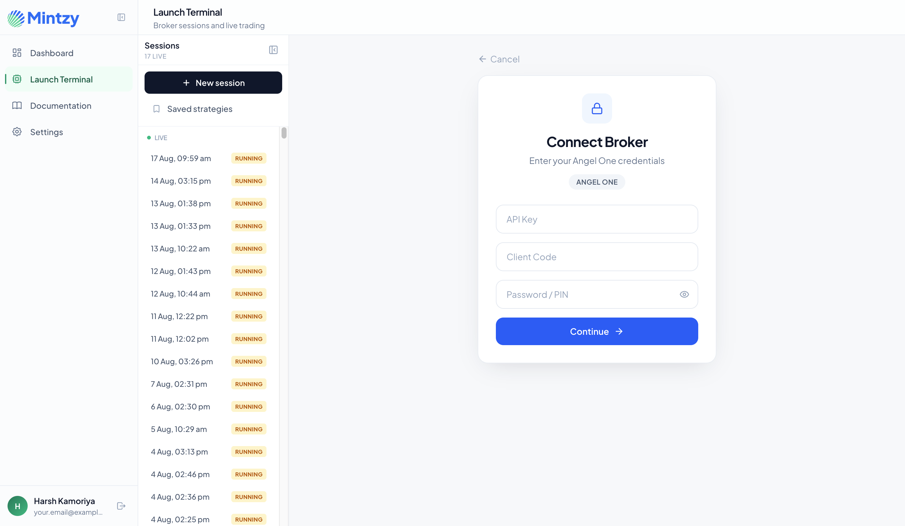
Figure 12 — The Connect Broker form (this account uses Angel One). The broker is shown in the grey pill above the fields.
In Launch Terminal, click New session.
Enter your broker's API key, client code, and password/PIN in the fields. Use the eye icon to reveal each password field.
Click Continue.
If your broker needs a second factor, the Two-Factor Auth screen appears next (see 5.6). Otherwise the app moves straight to the session configuration.
NOTE
Submitting the credentials creates a session record on your account. If the login cannot be completed, that session stays in your History and can be deleted (see section 6.6).
5.6 Two-Factor Auth (2FA)
What it does: Some brokers require a 6-digit code (a TOTP) from an authenticator app to approve the login.
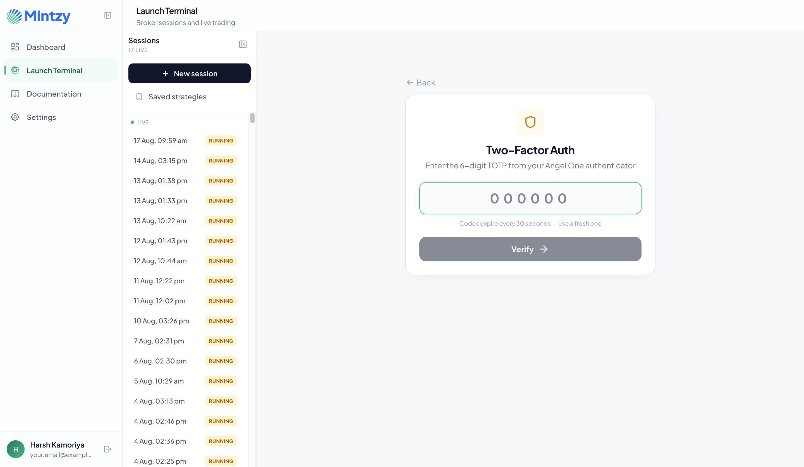
Figure 13 — The Two-Factor Auth screen, where you enter the 6-digit code from your authenticator app
Open your authenticator app (for example Google Authenticator) and find the code for your broker.
Type the 6-digit code into the large centred field.
Click Verify.
When accepted, the app moves to the session configuration screen.
WARNING
Codes expire every ~30 seconds. If the code is wrong or expired, a red message appears — in this example: "Invalid or expired TOTP. Wait for a new code in your authenticator and try again." Wait for the next code and try again. The field clears itself so you can't accidentally submit a used code.
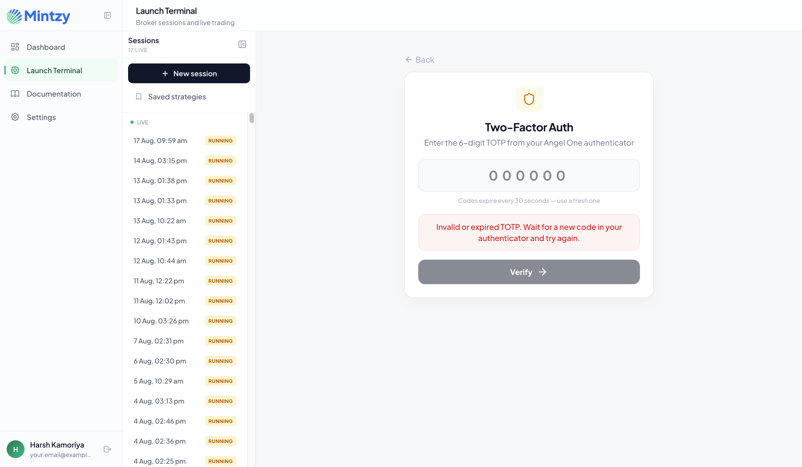
Figure 14 — The error shown when the 6-digit code is invalid or expired
Click Back if you entered the wrong broker credentials and want to reconnect.
5.7 Configure Session (not fully verified)
What it does: After the broker accepts your login, the app shows the Configure Session screen where you set your trading parameters before starting.
This screen could not be fully captured for this guide, because reaching it requires a successful live broker login. Based on the application's design it contains the same fields shown in the Saved Strategies editor (section 5.8):
Saved strategy — pick a saved setup to fill the form automatically.
Candle interval — 1m, 5m, 15m, or 75m.
Strategy — Stoppage Reversal or Exposure Expansion.
Use available broker cash — let trades draw from your broker balance.
Manual allocation — add one or more stocks, each with a capital amount and stop-loss percentage.
Leverage — 1×–5× position scaling for a saved strategy.
Start Trading — starts the session; Abandon session closes it without trading.
NOTE
For Angel One and Bear Street, trading begins in simulation and can switch to live; TradeX starts live. See the in-app Documentation page for more detail.
5.8 Saved Strategies
What it does: Saved Strategies stores reusable trading setups so you don't have to re-enter them every session.
When to use it: When you have a setup you like, save it once and reuse it — or Quick Start it on an existing session.
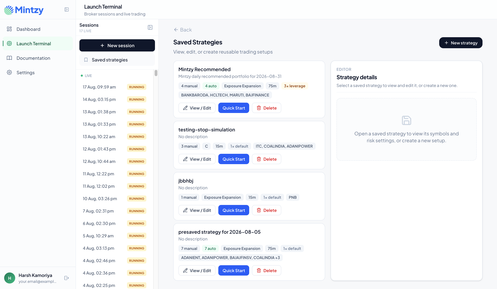
Figure 15 — The Saved Strategies page. Each card shows the strategy's summary; the editor opens on the right.
What each card shows
Name and description of the strategy.
Badges such as 4 manual, 4 auto, the strategy name, the candle interval, and leverage (for example 3× leverage).
View / Edit — open the setup in the editor.
Quick Start — start this strategy on the currently connected session (only appears when a session is connected).
Delete — remove the strategy (you are asked to confirm).
NOTE
Your account allows a limited number of saved strategies (5 on the test account used for this guide). If you reach the limit, delete one before saving another.
5.9 Settings
What it does: The Settings page controls how the desktop app behaves on your computer.
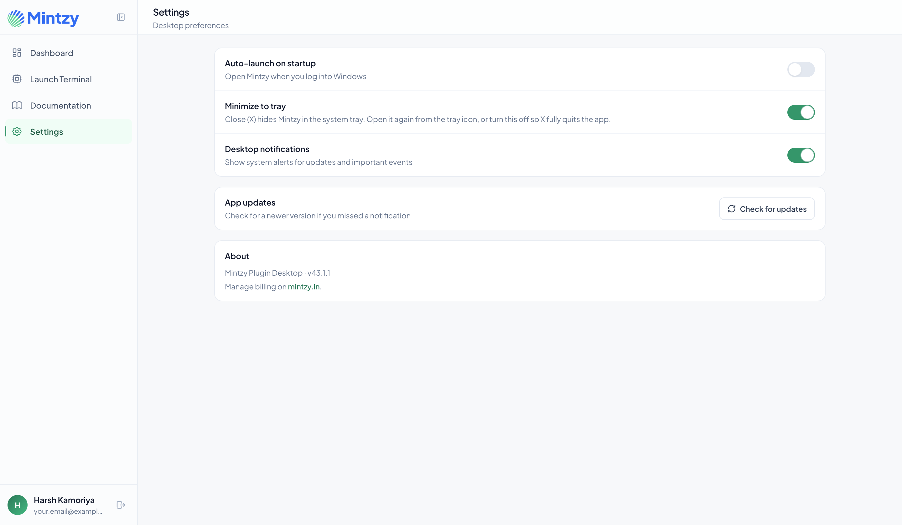
Figure 16 — The Settings page
Auto-launch on startup — open Mintzy automatically when you log into Windows.
Minimize to tray — when on, closing the window (X) hides Mintzy in the system tray instead of quitting; click the tray icon to reopen. When off, X quits the app completely.
Desktop notifications — show system alerts for updates and important events.
App updates — click Check for updates to look for a newer version. If one is ready, an Install now button appears.
About — shows the app version and a link to manage billing on mintzy.in.
Click a toggle switch to turn a setting on or off. The switch slides and changes colour.
A confirmation message appears in the bottom-right corner of the window for a few seconds.
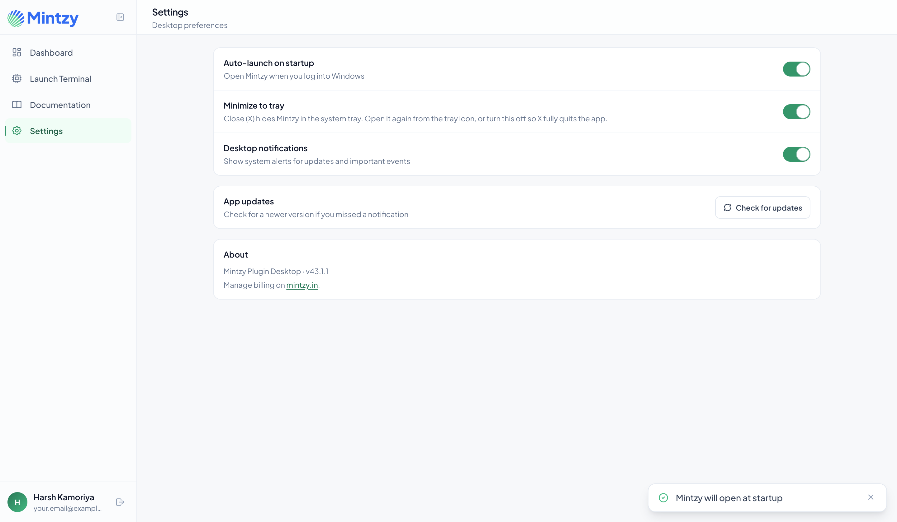
Figure 17 — A confirmation toast appears in the bottom-right after changing a setting
NOTE
These desktop settings are only available in the installed desktop app. In a web preview they show a notice saying so.
5.10 Documentation (in-app)
What it does: The Documentation page is a built-in guide covering sign-in, the dashboard, how the performance figures are calculated, the terminal, trade logs, live P&L, settings, and the sidebar.
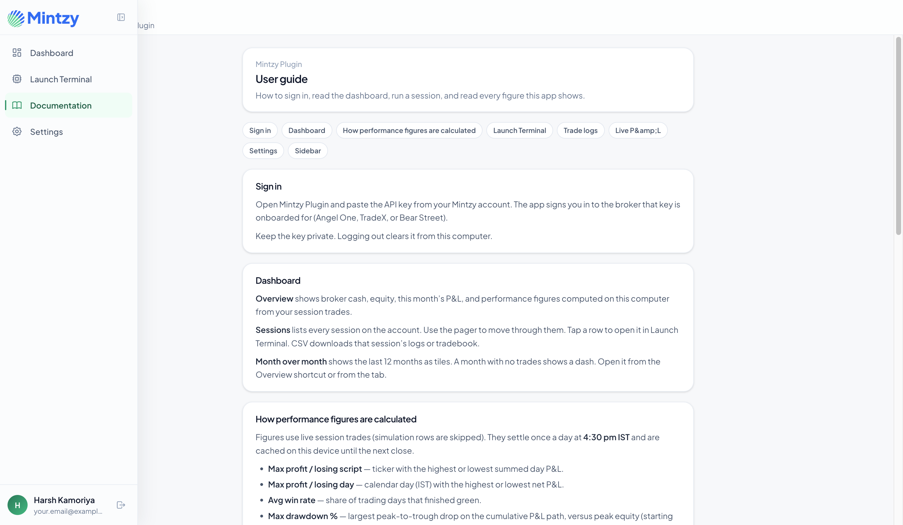
Figure 18 — The built-in Documentation page. Click the pill buttons to jump to a section.
6. Workflow Walkthroughs
These walkthroughs take you through the app's most common tasks end to end.
6.1 Sign in to the app
Goal: Open the app and reach your Dashboard.
Starting point: The app is installed and you have your Mintzy API key.
Double-click the Mintzy Plugin icon to open the app.
On the sign-in screen, click the API Key field.
Paste your API key (the dots hide it).
Click Continue.
Wait a moment for Verifying… to finish. The Dashboard opens.
Expected result: You see the Dashboard with your name, metrics, and session status. If you see a red error instead, go to section 7.
6.2 Browse the dashboard
Goal: Understand your current trading position.
Starting point: You are signed in on the Dashboard.
Read the three metric cards: Cash in broker, Equity, and This month.
Check the live session status row to see if anything is trading.
Click Sessions to browse the full list; click a row to open a session.
Click Month over month to see the last 12 months.
Scroll the Overview tab to see the Performance statistics.
Expected result: You can see your cash, equity, monthly P&L, sessions, and performance figures.
6.3 Create a saved strategy
Goal: Save a trading setup you can reuse later.
Starting point: You are signed in.
In the sidebar, click Launch Terminal.
In the sessions panel on the left, click Saved strategies.
Click New strategy at the top.
Enter a Strategy name (for example "Morning momentum") and an optional Description.
Choose a Candle interval and a Strategy.
Optionally tick Use available broker cash.
Under Manual allocation, click Add to add a stock.
Click the Select symbol box, type the stock name in the search box (for example HCLTECH), and click the matching result.
Enter the Capital in rupees and the Stop loss percentage.
Click Save strategy.
A confirmation toast appears: "Strategy saved". The editor stays open so you can now set leverage (1×–5×) with the Set leverage control.
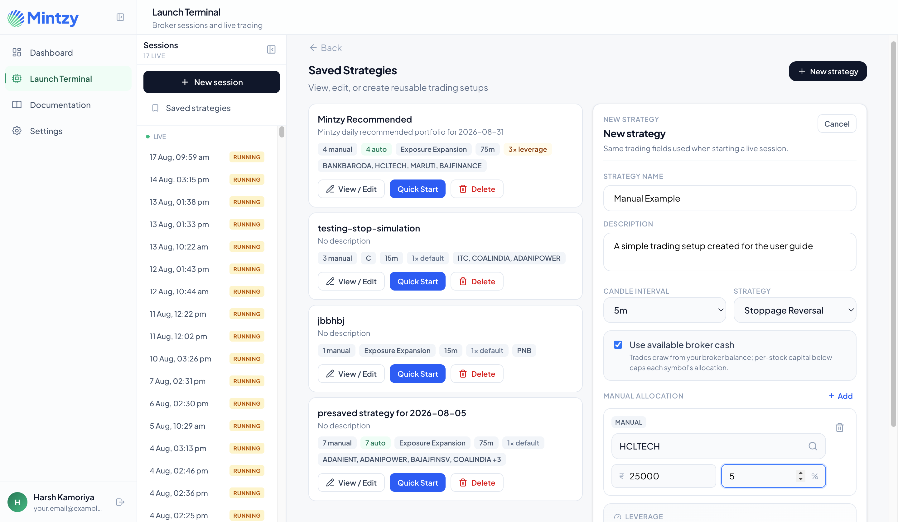
Figure 19 — The strategy editor with a manual allocation added
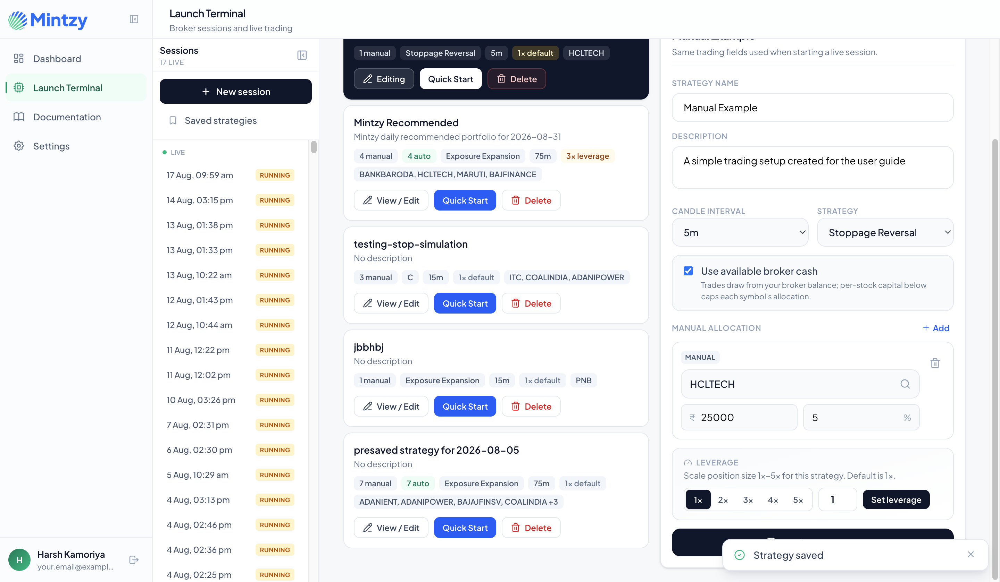
Figure 20 — After saving, the editor remains open and the leverage control becomes available
Expected result: Your new strategy appears as a card in the list with its badges.
6.4 Delete a saved strategy
Goal: Remove a strategy you no longer need.
Starting point: You are on the Saved Strategies page.
Find the strategy's card and click Delete.
A confirmation dialog appears: "Delete strategy?" with the strategy's name.
Click Delete to remove it, or Cancel to keep it.
After deleting, a toast confirms the deletion and the card disappears.
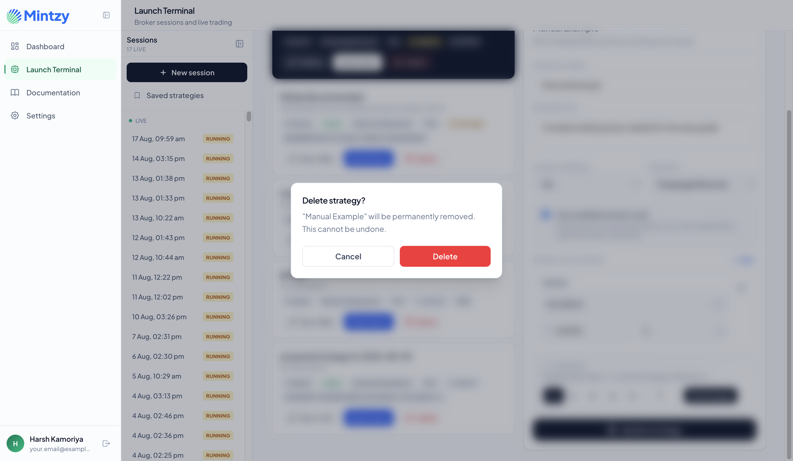
Figure 21 — The confirmation dialog before deleting a strategy
WARNING
Deleting a strategy is permanent and cannot be undone. If you might want it again, keep it.
6.5 Connect a broker and start a session
Goal: Start a trading session connected to your broker.
Starting point: You are signed in, and you have your broker credentials ready.
In the sidebar, click Launch Terminal.
Click New session (in the main area, or in the sessions panel).
On the Connect Broker screen, enter your broker's API key, client code, and password/PIN (fields vary by broker — see section 5.5).
Click Continue.
If asked, enter the 6-digit code from your authenticator app on the Two-Factor Auth screen and click Verify.
On the Configure Session screen, set your strategy and allocation (section 5.7), then click Start Trading.
You are taken to the live session dashboard where the chart, P&L, and trade logs appear.
Expected result: A live dashboard with the session's P&L chart, logs, and status.
WARNING
Steps 4–7 require a real, valid broker account. This guide could only verify up to the Two-Factor Auth step (sections 5.5–5.6). The configuration and live-trading screens were not captured because they need a live broker connection. Follow the on-screen steps carefully — trading involves real financial risk.
6.6 Delete a session
Goal: Remove an old session from the list.
Starting point: You are in Launch Terminal.
In the sessions panel, go to the History section.
Hover over a session row to reveal the trash icon on its right, and click it.
A confirmation dialog appears: "Delete session?" — it warns that the session and its history will be permanently removed and the tradebook CSV will no longer be downloadable.
Click Delete to remove it, or Cancel to keep it.
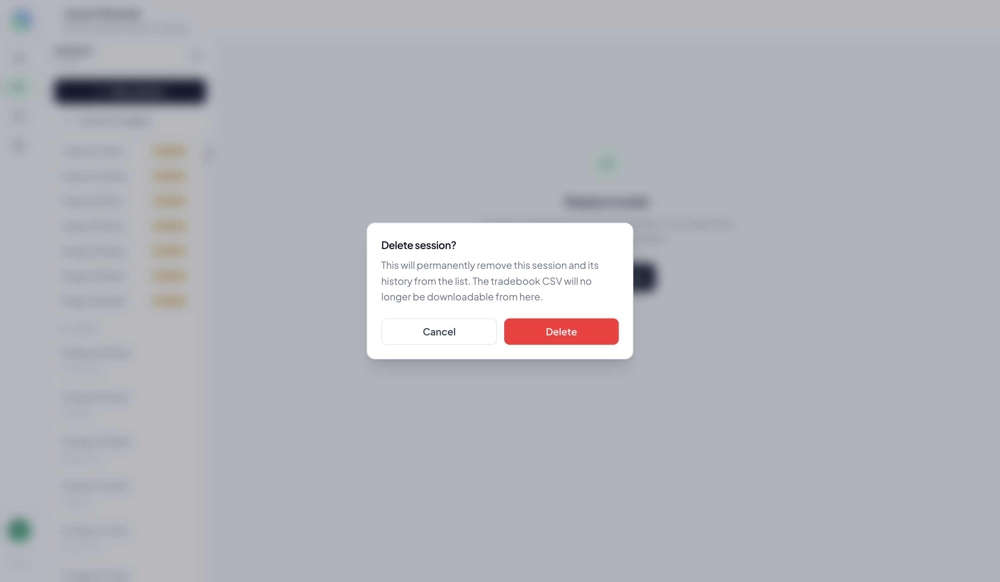
Figure 22 — The confirmation dialog before deleting a session
WARNING
Never delete a session that is currently Live unless you intend to stop that trading. Deleting removes its tradebook downloads too.
6.7 Log out
Goal: Sign out and return to the login screen.
Starting point: You are signed in.
At the bottom of the sidebar, click the log out icon next to your name.
The app returns to the sign-in screen. Your session is cleared from this computer.
Expected result: The sign-in screen appears (Figure 6).
7. Troubleshooting
For each problem below, the possible cause and the solution are based on behaviour observed while testing the app.
I can't log in
Problem
Possible cause
Solution
"Invalid … API key" red message
The key is mistyped, incomplete, or not for this account
Copy the whole key again from your Mintzy account and re-paste it. Check for stray spaces.
"Could not reach Mintzy…" message
No internet connection, or the servers are unreachable
Check your internet connection and try again. If it persists, try again later.
Nothing happens after clicking Continue
The app is still verifying
Wait a few seconds. If it stays stuck, close and reopen the app and try again.
I can't find a button or page
Problem
Possible cause
Solution
I don't see the navigation labels
The sidebar is collapsed to icons
Click the expand icon (two arrows pointing right) at the top of the sidebar, or hover over it to peek.
No "Saved strategies" text
The sessions panel is collapsed to icons
In Launch Terminal, click the panel icon (bars) at the top-left of the sessions rail.
I can't find "New session"
There are two: one in the main area, one in the sessions panel
Click either — the one in the main area appears when no session is selected.
A button appears disabled or won't submit
Problem
Possible cause
Solution
Continue / Verify button is greyed out
A required field is empty, or the app is busy
Fill every field. On the 2FA screen, enter all 6 digits before the Verify button enables.
Form won't submit
Required fields are missing (e.g. "Fill in all fields")
Complete all fields and try again. For Bear Street, the registered mobile number is required.
Quick Start button is missing
No session is connected
Connect a broker session first (section 6.5); Quick Start appears only with a connected session.
The 2FA code fails
Problem
Possible cause
Solution
"Invalid or expired TOTP…"
The code was mistyped or rotated (codes change every ~30 s)
Wait for the next code in your authenticator and type it immediately. The field clears itself after an error.
Data looks wrong or missing
Problem
Possible cause
Solution
Dashboard shows dashes for performance
No live trades yet, or statistics are still being calculated
Wait for the app to finish (the header says "Recalculating…"). Figures settle once a day at 4:30 pm IST.
"No trading sessions yet"
No sessions on this account yet
Start one from Launch Terminal. Past sessions appear here.
Search produces no results (symbol picker)
The symbol isn't in the supported list, or the spelling differs
Only the supported symbols list is searchable. Try the full name as shown in existing strategies (e.g. HCLTECH, not "HCL").
Numbers are from an old time
The dashboard refreshes on a timer and on focus
Click Updated … in the account card to refresh immediately.
Session shows "Connecting" and never advances
The broker login was not completed
Go Back and reconnect your credentials, or delete that session from History.
Session / account problems
Problem
Possible cause
Solution
You're sent back to the login screen suddenly
Your session expired (the app signs you out)
Sign in again with your API key. A fresh session lasts up to 24 hours.
You deleted something by accident
—
Deletion is permanent and cannot be undone. Keep backups of any CSVs you need.
"You've reached the maximum number of saved strategies"
Your plan limits how many strategies can be saved
Delete an unneeded strategy, then save the new one.
"Couldn't load trading data"
Network issue while loading the dashboard
Click Retry, or check your connection.
8. Frequently Asked Questions
Where do I start?
Open the app, sign in with your Mintzy API key (section 2.3), and you land on the Dashboard. From there use the sidebar to move around.
How do I get an API key?
API keys come from your Mintzy account at mintzy.in. The app's sign-in screen links to it. The key also determines which broker your sessions use.
How do I create a saved strategy?
Go to Launch Terminal → Saved strategies → New strategy, fill in the setup, and click Save strategy. See section 6.3.
Where can I find my trading sessions?
Two places: the Sessions tab on the Dashboard (all sessions, paginated), and the sessions panel inside Launch Terminal (Live and History).
How do I open an old session?
Click its row in the Dashboard's Sessions tab, or click it in the Launch Terminal sessions panel. It opens read-only with its trade log and P&L.
How do I download my session data?
In the Sessions tab, click the download icon in a row (or Download latest at the top). You get a CSV of the tradebook or logs.
How do I edit a saved strategy?
On the Saved Strategies page, click View / Edit on the strategy's card, change the fields, then click Update strategy.
How do I delete a saved strategy or a session?
Strategy: click Delete on its card and confirm. Session: in Launch Terminal, hover the session in History and click the trash icon, then confirm. See sections 6.4 and 6.6.
How do I change my settings?
Click Settings in the sidebar. Toggle auto-launch, minimize-to-tray, and notifications, and check for app updates. See section 5.9.
How do I log out?
Click the log out icon at the bottom of the sidebar (section 6.7).
Why do I see a green "Live" mark on Launch Terminal?
It means a session is trading right now. Open Launch Terminal to see it.
Why is my performance shown as dashes?
Performance is computed from your live session trades and settles once a day at 4:30 pm IST. If you have no qualifying trades yet, or the calculation hasn't finished, dashes are shown.
9. Glossary
Term
Meaning
API key
The secret key from your Mintzy account that signs you in to the app. It also decides which broker the app trades through.
Broker
The company that holds your trading account (for example Angel One, TradeX, or Bear Street). The app trades through your broker.
Session
One run of the trading bot. A session connects to your broker, runs a strategy, and records its trades and P&L.
Live session
A session that is trading right now.
Simulation
Practice trading with no real money, used before going live (Angel One and Bear Street). Sim rows are tagged "Sim" in the logs.
TOTP
A 6-digit time-based code from an authenticator app, used as the second step of broker login.
P&L
Profit and loss — the money made or lost.
Equity
The total value of your account including open positions.
Free cash / Cash in broker
The cash available in your broker account for trading.
Saved strategy
A saved trading setup (symbols, capital, stop-loss, candle, strategy) you can reuse.
Leverage
A 1×–5× multiplier that scales the position size of a saved strategy.
Candle interval
The timeframe of the price candles the strategy trades on (1m, 5m, 15m, 75m).
Stop loss
The percentage price drop that closes a trade to limit a loss.
Tradebook
The record of all trades placed in a session.
CSV
A spreadsheet-style file you can open in Excel; used to download session logs and tradebooks.
Drawdown
The largest drop from a peak in your performance — a measure of risk.
Win rate
The share of trading days that ended with a profit.
10. Quick Start Guide
The fastest path to using the app's main purpose — automated trading — in seven steps.
Sign in. Open the app, paste your Mintzy API key, click Continue.
Check the Dashboard. Look at your cash, equity, and this month's P&L.
Open Launch Terminal from the sidebar.
Save a strategy (optional): Saved strategies → New strategy → Save strategy. Or use a strategy you already saved.
Start a session: click New session, enter your broker credentials, and continue (enter the 6-digit code if asked).
Configure and start: choose your strategy and allocation, then click Start Trading.
Watch: the live dashboard shows the P&L chart and trade log. Find it again any time from the sessions panel.
Figure 23 — Launch Terminal, where sessions are started and watched
TIP
Still unsure? The built-in Documentation page (sidebar → Documentation) summarises everything, and sections 5–6 of this guide cover each feature and workflow in detail.
End of guide — Mintzy Plugin v1.1.9. Screenshots captured from the live application on a test account. Verify against your own screen; broker names and error wording may vary by account.